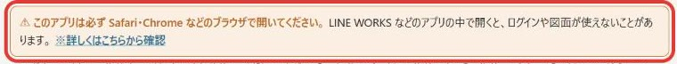
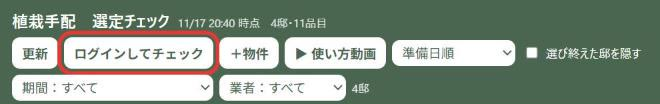

なぜブラウザで開くの？
LINE WORKS などのアプリの中の画面では、Google のログインが使えません。
（Google の決まりで、アプリの中の画面からのログインは断られます）
そのため、チェックを付ける・物件を直す・図面を置くことができません。図面のPDFもうまく開かないことがあります。
Safari（iPhone）や Chrome（Android・パソコン）などのブラウザで開いてください。

見るだけなら、アプリの中の画面でも見られます。
iPhone の場合
方法1 「Safariで開く」を選ぶ
方法2 リンクをコピーして Safari に貼る（方法1のボタンが見当たらないとき）
次から楽に開くには（ホーム画面に追加）
ホーム画面のアイコンから開いてログインできないときは、Safari で開いてください。Safari の「ブックマーク」に入れておいても便利です。
Android の場合
方法1 「ブラウザで開く」を選ぶ
方法2 リンクをコピーして Chrome に貼る
- トークのリンクを長押しして、コピー を押します。
- Chrome を開き、上のアドレス欄に貼り付けて開きます。
パソコンの場合
Chrome か Edge で開いてください。LINE WORKS のパソコン版でリンクを押すと、ふつうはブラウザで開きます。
開いたら

使い方は、見出しの右にある ▶ 使い方動画 で見られます。
※ 手順の絵はイメージです。携帯の機種やアプリの版によって、ボタンの場所や名前が少し違うことがあります。
← アプリに戻る